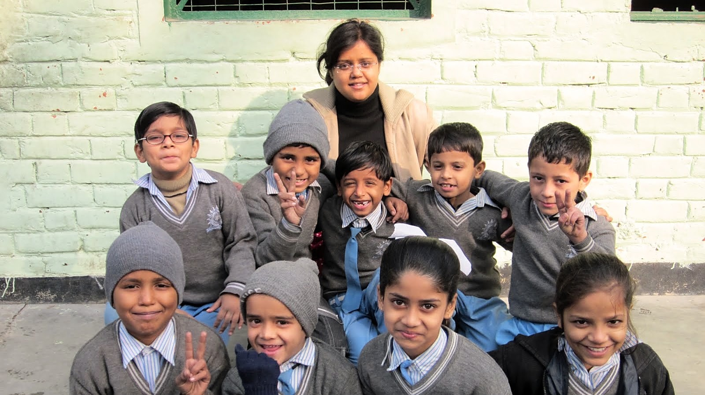
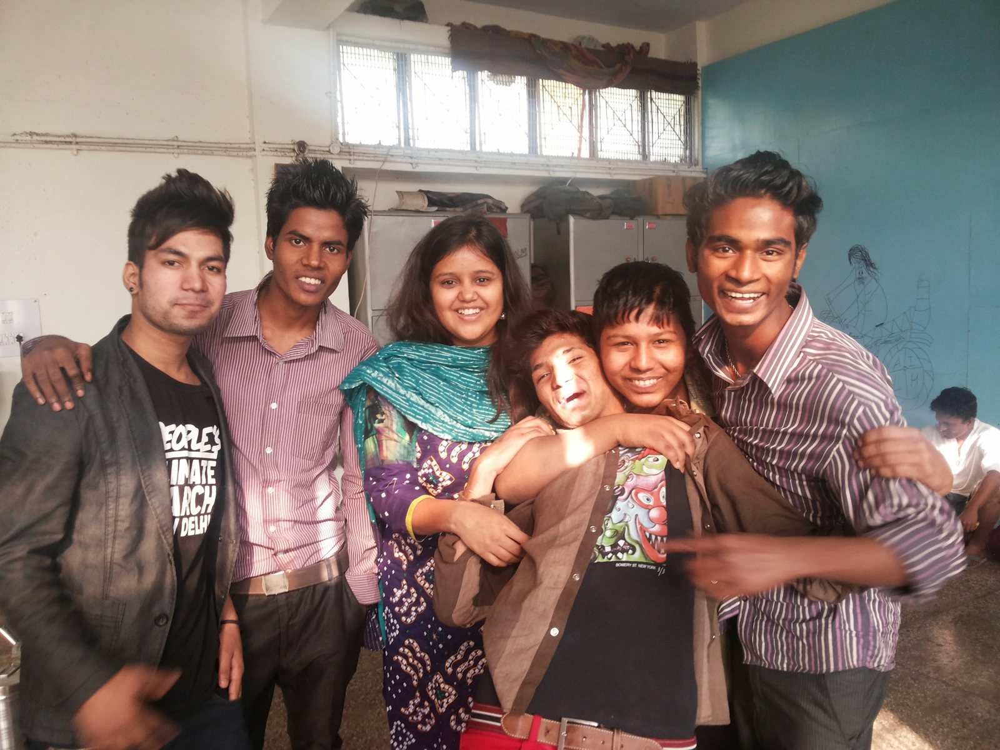
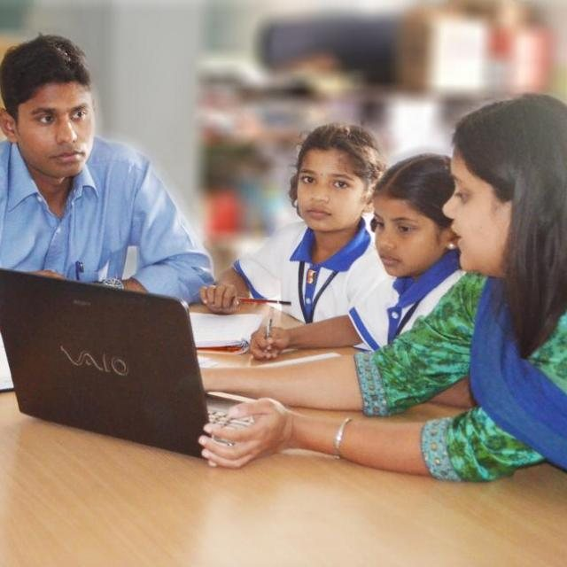
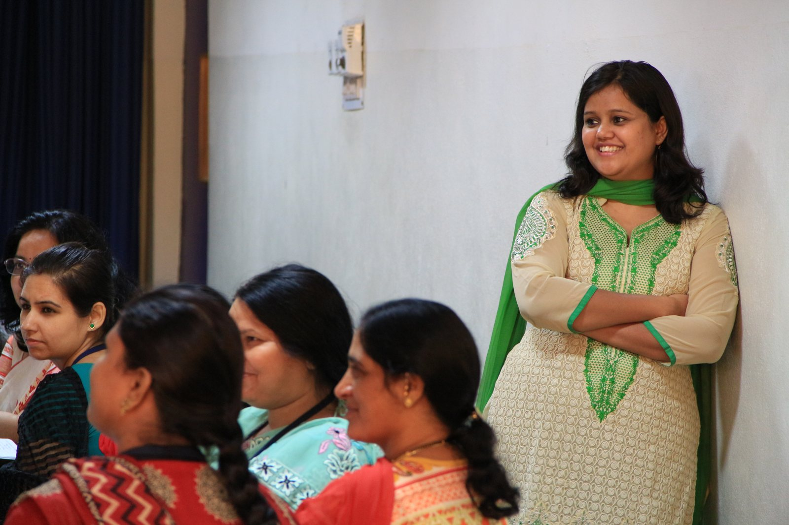

Teach For India Fellow · New Delhi · 2011–2013
Taught Grades 6 and 9 to at-risk youth rescued from the streets of New Delhi, and Grade 2 to 40 students in a low-cost private school in a densely populated slum area.


Jonathan M. Nelson Assistant Professor of Entrepreneurship and Education
Brown University
Almost everyone’s education journey has moments that prompt the question: why isn’t this better? This course moves from critique to creation, drawing on the economics of innovation to examine how new ideas spread and what it takes to innovate in education. Along the way, the course tackles questions like: Do innovations like AI and EdTech help or harm? Why don’t teacher incentives translate into student learning? Is education better as a public or private enterprise? But the heart of the course is an entrepreneurial journey: standing on the shoulders of giants to develop a scalable and sustainable solution, supported by in-class exercises and conversations with guest innovators.
This course introduces the toolkit of applied microeconomics for thinking about, developing, and analyzing education policy. Rather than focusing on abstract theory, the course introduces economic concepts via their application to current education policy debates. Topics include school funding, teacher labor markets, school choice, curricular reforms, standardized testing, and tracking. Students develop policy analysis skills through research presentations and policy memos.
We study recent innovations in three key areas of education: EdTech, AI, and Higher-Order Skills. This is a hands-on seminar where students not only analyze evidence-backed innovations but also iterate on them through six tinkering labs to propose new adaptations that can inform ongoing programs and policies at scale. Teams follow an entrepreneurial process (discover, validate, design, build, and scale), culminating in a capstone project addressing an education problem they care about.
Teachers College, Columbia University
Barnard College, Columbia University
Before research, I worked in classrooms in India, first as a teacher and then as a teacher trainer.
Teach For India Fellow · New Delhi · 2011–2013
Taught Grades 6 and 9 to at-risk youth rescued from the streets of New Delhi, and Grade 2 to 40 students in a low-cost private school in a densely populated slum area.


Instructional Designer and Teacher Trainer · SEED Schools and TalentSprint, Hyderabad · 2013–2017
Designed K–12 instruction and trained teachers in both low-cost and high-income private schools, first as Program Manager for K–10 Education at SEED Schools and then as Program Director of a nationwide teacher training program at TalentSprint.

